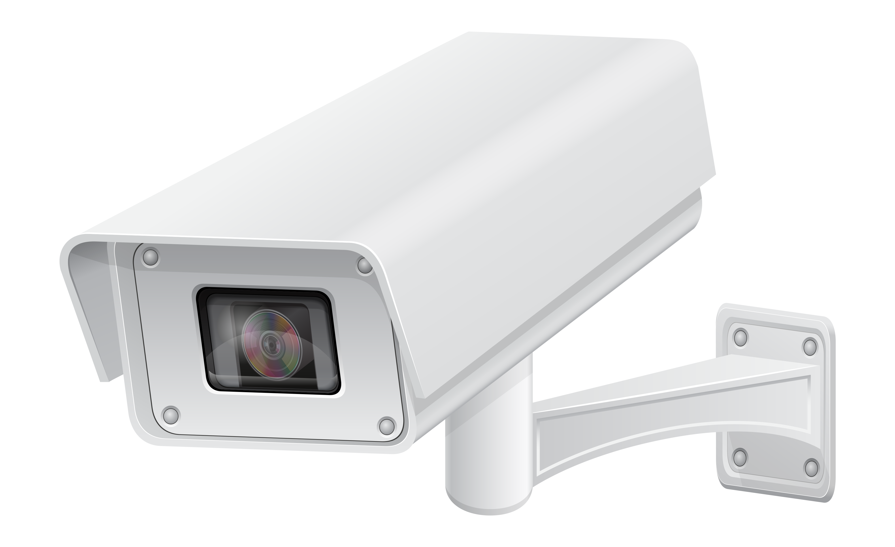

Svi smo upoznati sa kamerama za video nadzor i njihovim sposobnostima , ili čak šta više , manjkom sposobnosti.
Ali , kako tehnologija napreduje , tako je i taj napredak obuhvatio i razvoj „pametnih“ kamera.
Pametne kamere su bežične kamere koje rade više od snimanja snimaka ili fotografija.
Ove kamere imaju dodatne funkcije koje mogu podići bezbednost nečijeg doma ili radnog mesta na viši nivo
(Čak iako smo udaljeni stotinama kilometara!)
•Šta rade pametne kamere?
Pametne kamere prate dešavanja u vašem domu i putem Wi-Fi mreže šalje prenos snimka na vaš telefon ili ga skladišti u arhivu na Cloud-u.
Kamera je povezana preko aplikacije na vašem telefonu. Odatle osim praćenja snimka možete i menjati podešavanja vaše pametne kamere.
•Koje su sve mogućnosti pametne kamere?
Ovo su zanimljive i korisne prednosti koje ove kamere pružaju:
1.„Face Tag“– sposobnost kamere da prepoznaje lica. Sa „Face Tag“-om možete postaviti slike ukućana/porodice/prijatelja u aplikaciju
i označiti ih kao „bezbedne“ – osobe koje kada kamera vidi neće signalizirati uzbunu ili alarm preko aplikacije.
2.GPS – svaki put kada izlazite iz kuće , uz pomoć GPS-a , aplikacije na vašem telefonu signalizira kameri da se sama upali ,
tako da nikada ne morate da brinete da li ste zaboravili da uključite kameru. Po istom principu , kamera će se sama ugasiti kada GPS primeti da ste se vratili.
3.Audio komunikacija– ako otkrijete da se nešto sumnjivo događa u blizini / unutar vaše kuće ,
možete iskoristiti zvučnike ugrađene unutar pametne kamere i iznenaditi neželjene goste i stvoriti utisak da ste sa njima u kući
(preporučujem da u ovakvim situacijama takođe pozovete i policiju).
4.Detekcija pokreta –pametne kamere su opremljene sa senzorima koje mogu da detektuju pokrete i da se automatski okrenu ka izvoru kretanja ,
a zatim može upotrebiti već navedeni „Face Tag“ da prepozna da li je osoba prijatelj ili pak provalnik i da pošalje uzbunu na vaš telefon.
Ove kamere takođe imaju i režim noćnog vida što omogućava danonoćnu bezbednost.
5.Bežične su – za instalaciju ovih kamera nije potreban profesionalac.
Sve što je potrebno da uradite jeste da postavte kameru na željenu poziciju , instalirate aplikaciju i povežete se sa kamerom.
6.Prenos uživo – sve dok postoji internet konekcija ,preko aplikacije možete pratiti šta se dešava u vašem domu uživo.
7.Cloud skladištenje – ako ne želite da vam snimci sigurnosne kamere zauzmu memoriju na telefonu ,
možete povezati kameru sa vašim Cloud nalogom i imati pristup tim podacima bilo kad i bilo gde.
•Zaključak
Pametne kamere sve više postaju „neophodne“ za domaćinstvo.
Više od snimanja slika i snimaka, ovi uređaji se isporučuju sa dodatnim funkcijama kao što su „Face Tag“,
detekcija pokreta, GPS, audio komunikacija, gledanje u realnom vremenu i skladištenje u Cloud-u
kako biste mogli da izvučete maksimum iz svog bezbednosnog sistema.
Pronađite pravu kameru za vas uz pomoć videa ispod ili putem linka Najbolje kamere za videonadzor 2022.